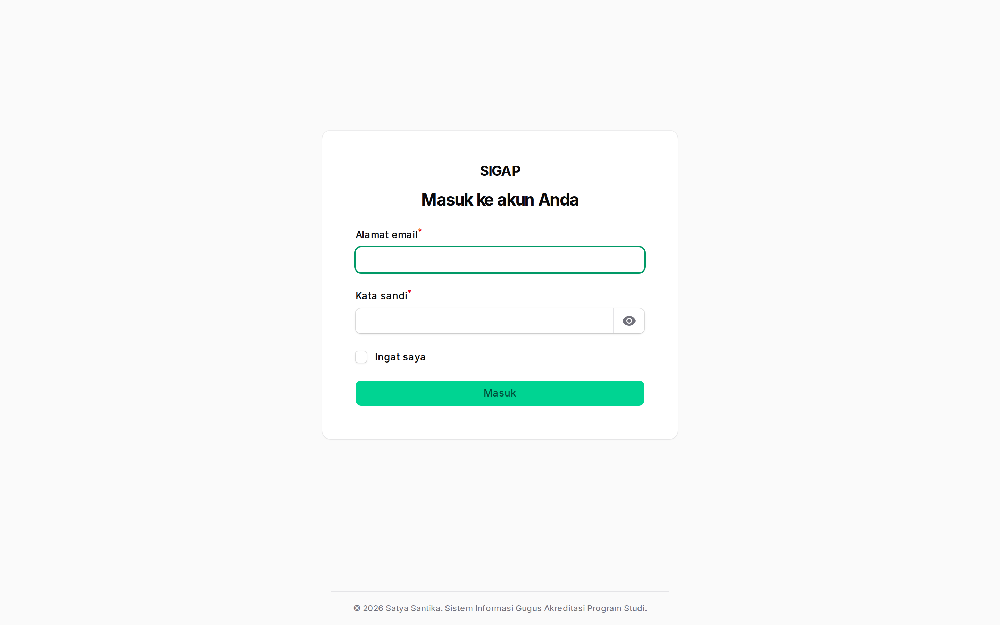
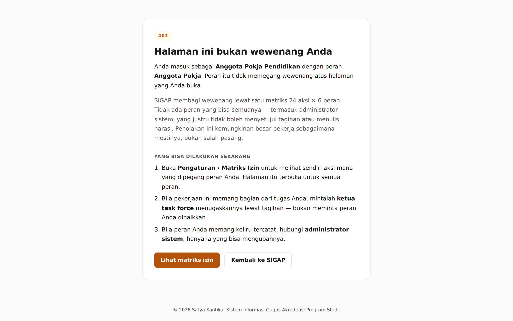
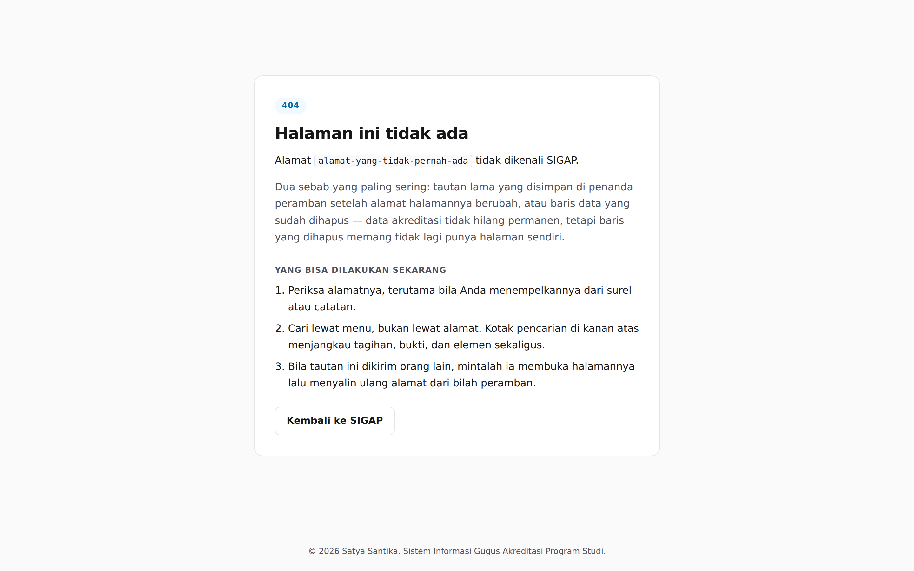

SIGAP membagi wewenang ke enam peran. Setiap orang hanya melihat apa yang menjadi urusannya, dan pembagian itu ditentukan satu matriks 144 sel yang bisa dibuka siapa pun lewat menu Matriks Izin. Bila sebuah tombol tidak muncul di layar Anda, jawabannya ada di sana — bukan pada kesalahan sistem.
Masuk ke SIGAP
Semua peran masuk lewat halaman yang sama. Tidak ada pendaftaran mandiri — akun dibuat oleh administrator sistem — dan tidak ada pemulihan kata sandi lewat surel.
Bila akun Anda dinonaktifkan, pesannya akan mengatakan demikian dengan jelas, supaya Anda berhenti menebak-nebak kata sandi sendiri. Untuk kata sandi yang salah, pesannya sengaja dibuat tidak membedakan akun yang ada dari akun yang tidak ada.

Menu Anda hanya memuat urusan Anda
Menu yang muncul berbeda per peran, dan perbedaannya disengaja. Anggota pokja
tidak melihat menu Pengguna atau Prodi; administrator sistem tidak melihat menu
Bukti atau Naskah LED. Tabelnya ada di data/menu.json dan diturunkan
dari dokumen rancangan layar.
Menu yang hilang menyembunyikan, bukan menolak. Penolakan tetap diputuskan matriks izin, dan halaman yang tidak ada di menu Anda tetap akan menolak bila dibuka lewat tautan langsung. Dua lapis itu memang disengaja: menyembunyikan tombol tidak pernah boleh menjadi satu-satunya pengaman.
Kalau ada yang salah
SIGAP tidak menampilkan halaman galat kosong. Setiap halaman galat menyebut apa yang terjadi, mengapa, dan apa yang bisa Anda lakukan sekarang.


Bila yang muncul adalah 500, halamannya menampilkan
kode rujukan seperti SIGAP-7KQ3M2XA. Salin kode itu
saat melapor: kode yang sama tersimpan di berkas log, jadi administrator bisa
menemukan baris yang tepat tanpa menebak jam kejadian. Jangan mengulang tindakan
yang sama berkali-kali — bila tindakan itu sempat menulis sebagian data,
pengulangan bisa menggandakannya.
Tentang gambar di manual ini
Setiap gambar di sini ditangkap dari SIGAP yang benar-benar berjalan, lewat
peramban sungguhan, dengan data contoh dari DemoSeeder. Tidak ada
gambar stok, tidak ada mockup, dan tidak ada tangkapan layar dari aplikasi lain.
Nama orang yang muncul di gambar adalah nama akun contoh, bukan dosen sungguhan.
Bila tampilan berubah, gambarnya harus ikut diperbarui.
Jalankan python3 tools/tangkap-layar.py lalu
python3 tools/susun-manual.py. Manual yang menampilkan layar lama
lebih menyesatkan daripada manual yang tidak bergambar sama sekali.